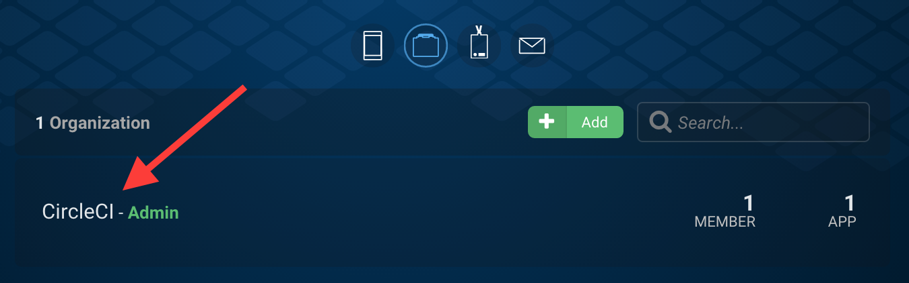
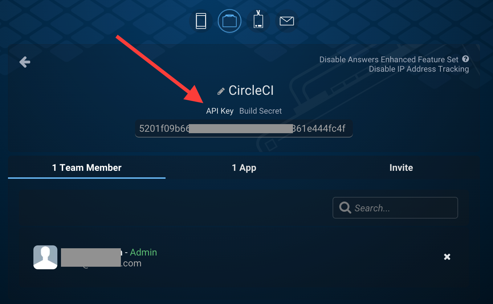
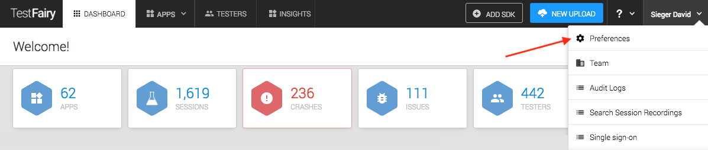

macOS 上の iOS アプリケーションのテスト
ここでは、CircleCI を使用して iOS アプリケーションのテストを設定およびカスタマイズする方法について、以下のセクションに沿って説明します。
- 概要
- macOS ビルドコンテナ
- サポートされている Xcode のバージョン
- はじめよう
- 基本的なセットアップ
- 高度なセットアップ
- fastlane の使用
- サポートされているビルドおよびテストのツール
- デプロイの設定
- シミュレーターに関する一般的な問題の解決方法
- 複数の Executor タイプを含む設定例 (macOS と Docker)
- React Native プロジェクト
- 関連項目
概要
CircleCI では、iOS プロジェクトと macOS プロジェクトをビルドしてテストすることができます。 CircleCI の macOS ビルドイメージにインストールされているソフトウェアのマニフェストについては、macOS ビルドイメージの使用に関するドキュメントを参照してください。
macOS ビルドコンテナ
各 macos ジョブは、macOS が稼働している新しいコンテナ内で実行されます。 CircleCI では、Apple から新しいバージョンの Xcode がリリースされるたびに、新しいコンテナをビルドします。 個々のビルドコンテナのコンテンツは変更されません (ただし、例外的にコンテナをリビルドせざるを得ない状況になることもあります)。 CircleCI では、安定したビルド環境を維持すること、そして config.yml ファイルに xcode キーを設定して最新のコンテナを選択していただけるようにすることを目標としています。
新しい macOS コンテナに関する情報は、CircleCI ディスカッションフォーラムの Annoucements (お知らせ) カテゴリで確認できます。
サポートされている Xcode のバージョン
現時点では以下の Xcode バージョンが使用可能です。
-
11.4.0：Xcode 11.4 Beta 3 (ビルド 11N132i) インストールされているソフトウェア -
11.3.1：Xcode 11.3.1 (ビルド 11C505) インストールされているソフトウェア -
11.3.0：Xcode 11.3 (ビルド 11C29) インストールされているソフトウェア -
11.2.1：Xcode 11.2.1 (ビルド 11B500) インストールされているソフトウェア -
11.2.0：Xcode 11.2.1 (ビルド 11B500) インストールされているソフトウェア -
11.1.0：Xcode 11.1 (ビルド 11A1027) インストールされているソフトウェア -
11.0.0：Xcode 11.0 (ビルド 11A420a) インストールされているソフトウェア -
10.3.0：Xcode 10.3 (ビルド 10G8) インストールされているソフトウェア -
10.2.1：Xcode 10.2.1 (ビルド 10E1001) インストールされているソフトウェア -
10.1.0：Xcode 10.1 (ビルド 10B61) インストールされているソフトウェア -
10.0.0：Xcode 10.0 (ビルド 10A255) インストールされているソフトウェア -
9.4.1：Xcode 9.4.1 (ビルド 9F2000) インストールされているソフトウェア -
9.4.0：Xcode 9.4 (ビルド 9F1027a) インストールされているソフトウェア -
9.3.1：Xcode 9.3.1 (ビルド 9E501) インストールされているソフトウェア -
9.3.0：Xcode 9.3 (ビルド 9E145) インストールされているソフトウェア -
9.2.0：Xcode 9.2.0 (ビルド 9C40b) インストールされているソフトウェア -
9.1.0：Xcode 9.1.0 (ビルド 9B55) インストールされているソフトウェア -
9.0.1：Xcode 9.0.1 (ビルド 9A1004) インストールされているソフトウェア
はじめよう
CircleCI アプリケーションの [Add Projects (プロジェクトの追加)] ページで、ビルドしたい macOS プロジェクトを選択します。 メモ：2.0 では、ビルド環境を変更する必要がなくなりました。プロジェクトが macOS としてリストされていない場合は、Linux プロジェクトを選択し、[Operating System (オペレーティングシステム)] セクションで「macOS」を選択してください。
基本的なセットアップ
プロジェクトで macOS ビルドを有効にしたら、CircleCI が正しいビルドアクションを実行できるように、CircleCI でビルドするスキームを共有します。 既存のスキームを共有するには、Xcode で以下の手順を行います。
- [Product (プロダクト)] > [Scheme (スキーム)] > [Manage Schemes (スキーム管理)] の順に選択します。
- 共有したいスキームの [Shared (共有する)] オプションを選択し、[Close (閉じる)] をクリックします。
- [Source Control (ソース管理)] > [Commit (コミットする)] の順に選択します。
- 共有データフォルダーを選択します。
- テキストフィールドにコミットメッセージを入力します。
- プロジェクトを Git で管理している場合は、[Push to remote (リモートにプッシュする)] オプションを設定します。
- [Commit Files (ファイルをコミットする)] ボタンをクリックします。 新しい
.xcschemeファイルが Xcode プロジェクトの下のxcshareddata/xcschemesフォルダーに格納されます。 - CircleCI からアクセスできるように、このファイルを Git リポジトリにコミットします。
単純なプロジェクトであれば、最小限の設定で実行できます。 コンフィグの最小構成例は、「iOS プロジェクトのチュートリアル」にて参照してください。
ベストプラクティス
基本的なセットアップのステップに加えて、以下のとおり CircleCI ミラーから CocoaPods Specs をダウンロードし (速度が最大 70% 向上します)、build-and-test ジョブで Swift コードを Lint チェックすることをお勧めします。
# .circleci/config.yml
version: 2
jobs:
build-and-test:
macos:
xcode: "9.0"
environment:
FL_OUTPUT_DIR: output
steps:
- checkout
- run:
name: CocoaPods Specs をフェッチ
command: |
curl https://cocoapods-specs.circleci.com/fetch-cocoapods-repo-from-s3.sh | bash -s cf
- run:
name: CocoaPods をインストール
command: pod install --verbose
- run:
name: テストをビルドして実行
command: fastlane scan
environment:
SCAN_DEVICE: iPhone 8
SCAN_SCHEME: WebTests
- store_test_results:
path: output/scan
- store_artifacts:
path: output
workflows:
version: 2
build-and-test:
jobs:
- build-and-test
高度なセットアップ
高度なセットアップとして、ビルドジョブやテストジョブと共に Lint ジョブを実行できます。また、Danger などのツールも実行できる場合があります。
以下のように、推奨の設定を拡張して、Lint ジョブと Danger ジョブを追加することができます。
version: 2
jobs:
build-and-test:
swiftlint:
docker:
- image: dantoml/swiftlint:latest
steps:
- checkout
- run: swiftlint lint --reporter junit | tee result.xml
- store_artifacts:
path: result.xml
- store_test_results:
path: result.xml
danger:
docker:
- image: dantoml/danger:latest
steps:
- checkout
- run: danger
workflows:
version: 2
build-test-lint:
jobs:
- swiftlint
- danger
- build-and-test
fastlane の使用
fastlane は、モバイルアプリのビルドとデプロイのプロセスを自動化するためのツールセットです。 fastlane を使用すると、ビルドとデプロイをローカルでも CircleCI 上でも同等に実行でき、設定プロセスが簡単になるため、ご使用をお勧めします。
Gemfile の追加
ローカルでも CircleCI 上でも同じバージョンの fastlane が使用できるよう、Gemfile をリポジトリに追加することをお勧めします。 以下に、最小構成の Gemfile の例を示します。
# Gemfile
source "https://rubygems.org"
gem 'fastlane'
Gemfile をローカルで作成したら、bundle install を実行し、Gemfile と Gemfile.lock の両方をリポジトリにチェックインする必要があります。
CircleCI 上で使用する場合の fastlane の設定
fastlane を CircleCI プロジェクトに使用する場合は、以下の行を fastfile に追加することをお勧めします。
# fastlane/Fastfile
...
platform :ios do
before_all do
setup_circle_ci
end
...
end
以下のアクションを実行するには、setup_circle_ci fastlane アクションを before_all ブロック内に置く必要があります。
- fastlane match で使用する一時的なキーチェーンを新しく作成する (詳細については、コード署名のセクションを参照してください)。
- fastlane match を
readonlyモードに切り替えて、CI が新しいコード署名証明書やプロビジョニングプロファイルを作成しないようにする。 - 収集しやすくなるように、ログやテスト結果のパスを設定する。
CircleCI で fastlane を使用する場合の設定例
以下に、CircleCI で使用できる fastlane の基本設定を示します。
# fastlane/Fastfile
default_platform :ios
platform :ios do
before_all do
setup_circle_ci
end
desc "すべてのテストを実行"
lane :test do
scan
end
desc "アドホックビルド"
lane :adhoc do
match(type: "adhoc")
gym(export_method: "ad-hoc")
end
end
上記の設定は、以下の CircleCI のコンフィグファイルと組み合わせて使用できます。
# .circleci/config.yml
version: 2
jobs:
build-and-test:
macos:
xcode: "9.0"
environment:
FL_OUTPUT_DIR: output
FASTLANE_LANE: test
shell: /bin/bash --login -o pipefail
steps:
- checkout
- run: bundle install
- run:
name: fastlane
command: bundle exec fastlane $FASTLANE_LANE
- store_artifacts:
path: output
- store_test_results:
path: output/scan
adhoc:
macos:
xcode: "9.0"
environment:
FL_OUTPUT_DIR: output
FASTLANE_LANE: adhoc
shell: /bin/bash --login -o pipefail
steps:
- checkout
- run: bundle install
- run:
name: fastlane
command: bundle exec fastlane $FASTLANE_LANE
- store_artifacts:
path: output
workflows:
version: 2
build-test-adhoc:
jobs:
- build-and-test
- adhoc:
filters:
branches:
only: development
requires:
- build-and-test
環境変数 FL_OUTPUT_DIR は、fastlane ログを保存するアーティファクトディレクトリです。 この環境変数を使用して、Gym や Scan などのログを自動的に保存するためのパスを store_artifacts ステップで設定します。
CocoaPods の使用
CocoaPods を使用する場合は、Pods ディレクトリをソース管理にチェックインすることをお勧めします。 そうすると、決定論的で再現可能なビルドを実現できます。
サポートされているビルドおよびテストのツール
CircleCI 2.0 では、iOS のビルドやテストに関するほぼすべてのストラテジーに合わせてビルドをカスタマイズできます。
XCTest ベースのツール
以下のテストツールは、CircleCI で有効に機能することが確認されています (他の多くのツールも問題なく機能します)。
その他のツール
Appium や Frank などの一般的な iOS テストツールも正常に機能します。これらのツールはインストール済みで、run コマンドを使用して呼び出すことができます。
シミュレーターの事前起動
アプリケーションをビルドする前に iOS シミュレーターを起動して、シミュレーターの稼働が遅れないようにします。 こうすることで、通常はビルド中にシミュレーターのタイムアウトが発生する回数を減らすことができます。
シミュレーターを事前に起動するには、以下の行を config.yml ファイルに追加します。ここでは、iOS 10.2 を使用する iPhone 7 シミュレーターでテストを行うように指定しています。
steps:
- run:
name: シミュレーターを事前に起動
command: xcrun instruments -w "iPhone 7 (10.2) [" || true
メモ：iPhone と Apple Watch のシミュレーターもビルドイメージに含まれるので、iPhone 7 シミュレーターを一意に識別するために [ が必要です。
- iPhone シミュレーター：
iPhone 7 (10.2) [<uuid>] - iPhone と Apple Watch のペア：
iPhone 7 Plus (10.2) + Apple Watch Series 2 - 42mm (3.1) [<uuid>]
config.yml ファイルの作成
ビルドを柔軟にカスタマイズするには、.circleci/config.yml ファイルをプロジェクトに追加します。こうすることで、ビルドプロセスのさまざまな段階で任意の bash コマンドを実行できます。 config.yml ファイルの構造の詳細については、「CircleCI を設定する」を参照してください。 メモ：このドキュメントに記載されているオプションの多くは、macOS ビルドでは機能しません。
カスタムパッケージのインストール
CircleCI には Homebrew がプリインストールされているため、brew install を使用するだけで、ビルド VM に必要なほぼすべての依存関係を追加できます。 以下に例を示します。
steps:
- run:
name: cowsay をインストール
command: brew install cowsay
- run:
name: cowsay hi
command: cowsay Hi!
必要な場合は、sudo コマンドを使用して、Homebrew 以外のカスタマイズも実行できます。
特定の Ruby バージョンの使用
CircleCI の macOS コンテナには、複数のバージョンの Ruby が格納されています。 デフォルトのバージョンは、システムにインストールされている Ruby です。 コンテナには、動作が安定していて、そのコンテナがビルドされた時点で最新バージョンの Ruby も含まれています。 CircleCI では、Ruby-Lang.org のダウンロードページを基に、動作が安定している Ruby のバージョンを判断しています。 各イメージにインストールされている Ruby のバージョンは、各コンテナのソフトウェアマニフェストに記載されています。
マニフェストで「available to chruby (chruby で使用可)」と説明されている Ruby のバージョンでは、chruby を使用してステップを実行できます。 chruby をアクティブ化するには、--login を追加して、ジョブの shell パラメーターをログインシェルに変更する必要があります。
version: 2
jobs:
build:
macos:
xcode: "10.1.0"
shell: /bin/bash --login -eo pipefail
使用する Ruby のバージョンを指定するには、2つの方法があります。 1つは、chruby で説明されているとおり、.ruby-version という名前のファイルを作成してリポジトリにコミットする方法です。 .ruby-version ファイルをソース管理にコミットしたくない場合は、ジョブステップでファイルを作成できます。
run:
name: Ruby のバージョンを設定
command: echo "ruby-2.4" > ~/.ruby-version # 2.4 を特定の Ruby バージョンに置き換えます
メモ：Ruby のバージョンは、macOS コンテナのソフトウェアマニフェストに記載されている中から選択する必要があります。
プリインストールされていない Ruby のバージョンでジョブを実行するには、必要なバージョンの Ruby をインストールする必要があります。 必要なバージョンの Ruby をインストールするには、ruby-install ツールを使用します。 インストールが完了したら、上記の方法で対象のバージョンを選択できるようになります。
カスタムバージョンの CocoaPods と他の Ruby gem の使用
ローカルで使用しているバージョンの CocoaPods を CircleCI のビルドでも使用するには、iOS プロジェクトで Gemfile を作成し、そこに CocoaPods バージョンを追加することをお勧めします。
source 'https://rubygems.org'
gem 'cocoapods', '= 1.3.0'
次に、Bundler を使用してインストールします。
steps:
- restore_cache:
key: 1-gems-{{ checksum "Gemfile.lock" }}
- run: bundle check || bundle install --path vendor/bundle
- save_cache:
key: 1-gems-{{ checksum "Gemfile.lock" }}
paths:
- vendor/bundle
また、コマンドにプレフィックス bundle exec を付加しておくと、確実に使用できるようになります。
steps:
- run: bundle exec pod install
デプロイの設定
署名済みのアプリケーションがある場合は、デプロイを設定できます。 以下のいずれかを使用して、アプリケーションを簡単に配布できます。
使用するサービスに応じて、環境変数を設定する必要があります。
HockeyApp
-
HockeyApp にログインし、トークンページで新しい API トークンを作成します。 新しいビルドを HockeyApp にアップロードするには、使用するトークンに少なくともアップロード権限が必要です。
-
新しい API トークンに「CircleCI Distribution」などの CircleCI に関連する名前を付けます。
-
トークンをコピーし、CircleCI にログインして、アプリケーションの [Project Settings (プロジェクト設定)] ページに移動します。
-
HOCKEY_APP_TOKENという名前の新しい環境変数を作成し、その値としてトークンをペーストします。 これで、どのジョブでもこのトークンにアクセスできます。
Crashlytics (ベータ版)
-
Fabric.io にログインし、組織の設定ページにアクセスします。
-
対象の組織 (上図では CircleCI) をクリックし、[API key (API キー)] と [Build Secret (ビルドシークレット)] の各リンクをクリックして、それらの項目を表示させます。
-
CircleCI アプリケーションで、アプリケーションの [Project Settings (プロジェクト設定)] ページに移動し、[Environment Variables (環境変数)] に新しい項目として
CRASHLYTICS_API_KEYとCRASHLYTICS_SECRETを追加し、それぞれ Crashlytics のWeb サイトに表示された値を設定します。
TestFairy
TestFairy でアプリケーションを設定するには、以下の手順を行います。

- TestFairy ダッシュボードで、[Preferences (設定)] ページに移動します。
- [Preferences (設定)] ページの [API Key (API キー)] セクションに移動します。
- API キーをコピーし、CircleCI アプリケーションでアプリケーションの [Project Settings (プロジェクト設定)] ページに移動します。
- デプロイするには、fastlane または
curlを使用し、設定にジョブを追加します。以下の例を参照してください。
jobs:
build:
# ビルドコードをここに挿入...
deploy:
steps:
- checkout
- run:
name: TestFairy にデプロイ
command: |
curl \
-A "CircleCI 2.0" \
-F api_key="$TESTFAIRY_API_KEY" \
-F comment="CircleCI build $CIRCLE_BUILD_URL" \
-F file=@path/to/ipafile.ipa \
https://upload.testfairy.com/api/upload/
workflows:
version: 2
build-and-deploy:
jobs:
- build
- deploy:
requires:
- build
filters:
branches:
only: master
使用可能なすべてのオプションについては、TestFairy のアップロード API に関するドキュメントを参照してください。
シミュレーターに関する一般的な問題の解決方法
一部のプロジェクトでは、シミュレーター関連の問題が発生することがわかっています。 特に頻繁に発生する問題について説明します。
-
Xcode のバージョンが使用できない：各ビルドイメージにはいくつかのバージョンの Xcode がインストールされており、最新のリリースに伴い更新されていきます。 バージョン
10.0.0を使用する場合は、ポイントリリース番号まで含めたフルバージョンを指定する必要があります。 一方、最新の Xcode 11.3.0 (11.3.0など) を使用する場合は、config.ymlに11.3のみを指定します。 CircleCI 上で11.3バージョンと指定してあれば、11.3 の最新ポイントリリースが公開されたときに、そのまま最新ポイントリリースが使用できるようになります。 -
依存関係のバージョンが一致しない：想定とは異なる依存関係のバージョンがジョブで使用されている場合は、キャッシュを使用せずにリビルドしてみてください。キャッシュ内の古い依存関係が原因となって、新しいバージョンのインストールが妨げられている可能性があります。
-
Cryptic でコンパイルエラーが発生する：コンパイル時に原因不明のエラーが発生した場合は、ビルドで使用している Xcode のバージョンが、ローカルで使用しているバージョンと一致しているかどうかを確認してください。 プロジェクトの
config.ymlで Xcode のバージョンを指定していない場合は、古い Xcode がデフォルトで使用され、必要な機能がサポートされていない可能性があります。 -
Ruby でセグメンテーション違反が発生する：ジョブの実行中に使用される Ruby gem の一部によって、Ruby でセグメンテーションエラーが発生するケースが確認されています。 原因としては、gem のビルドに使用された Ruby のバージョンと、その実行に使用された Ruby のバージョンが異なることが考えられます。 ローカルで使用されている Ruby のバージョンが CircleCI で使用されているバージョンと一致していることを確認してください。 コンテナに新しいバージョンの Ruby をインストールする場合は、こちらのガイドを参照してください。
-
テストラン中に不規則なタイムアウトが発生する：UI テストがタイムアウトになる場合は、他のテストの前に実行してみてください。 また、
xcodebuildコマンドまたはxctoolコマンドもそのまま使用してみてください。 一部の問題は、これらのツールでのみ発生します。 -
コード署名証明書のインストール中にエラーが発生する：iOS コード署名に関するドキュメントを参照してください。
-
多数の iOS アプリの開発者が、大量のコードを生成するツールを使用している：この場合、CircleCI では Xcode のワークスペース、プロジェクト、またはスキームを正しく検出できないことがあります。 代わりに、環境変数を使用してそれらを指定できます。
macOS ベースのビルドの制限事項
現在、macOS 上の並列コンテナ間でのテストの分割はサポートされていません。 複数の Xcode バージョンを使用してビルドする場合、または複数のテストターゲットを実行する場合は、並列ジョブを含むワークフローを使用することをお勧めします。 並列ジョブを含むワークフローの例については、こちらのドキュメントを参照してください。
複数の Executor タイプを含む設定例 (macOS と Docker)
同じワークフロー内で、複数の Executor タイプを使用することができます。 以下の例では、プッシュされる iOS プロジェクトは macOS 上でビルドされ、その他の iOS ツール (SwiftLint と Danger) は Docker で実行されます。
version: 2
jobs:
build-and-test:
macos:
xcode: "9.0"
working_directory: /Users/distiller/project
environment:
FL_OUTPUT_DIR: output
steps:
- checkout
- run:
name: CocoaPods Specs をフェッチ
command: |
curl https://cocoapods-specs.circleci.com/fetch-cocoapods-repo-from-s3.sh | bash -s cf
- run:
name: CocoaPods をインストール
command: pod install --verbose
- run:
name: テストをビルドして実行
command: fastlane scan
environment:
SCAN_DEVICE: iPhone 8
SCAN_SCHEME: WebTests
- store_test_results:
path: output/scan
- store_artifacts:
path: output
swiftlint:
docker:
- image: dantoml/swiftlint:latest
steps:
- checkout
- run: swiftlint lint --reporter junit | tee result.xml
- store_artifacts:
path: result.xml
- store_test_results:
path: result.xml
danger:
docker:
- image: dantoml/danger:latest
steps:
- checkout
- run: danger
workflows:
version: 2
build-test-lint:
jobs:
- swiftlint
- danger
- build-and-test
React Native プロジェクト
React Native プロジェクトは、CircleCI 2.0 上で macos および docker Executor タイプを使用してビルドできます。 React Native プロジェクトの例については、GitHub にある React Native アプリケーションサンプルを参照してください。
関連項目
- CircleCI 2.0 で fastlane を使用して iOS プロジェクトをビルド、テスト、署名、およびデプロイする完全なサンプルについては、
circleci-demo-iosの GitHub リポジトリ を参照してください。 - コンフィグの詳しい説明については、「iOS プロジェクトのチュートリアル」を参照してください。